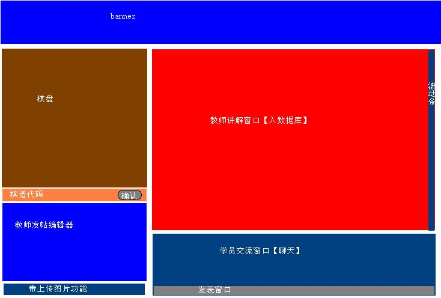
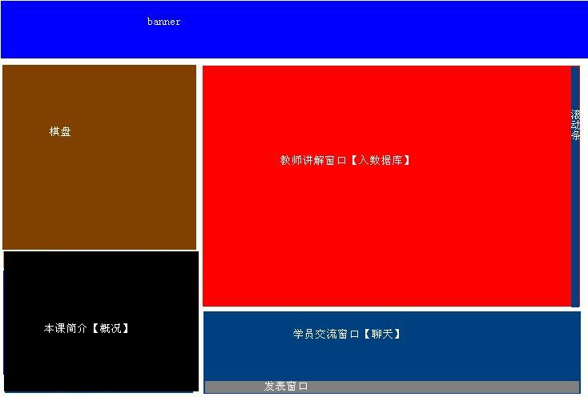
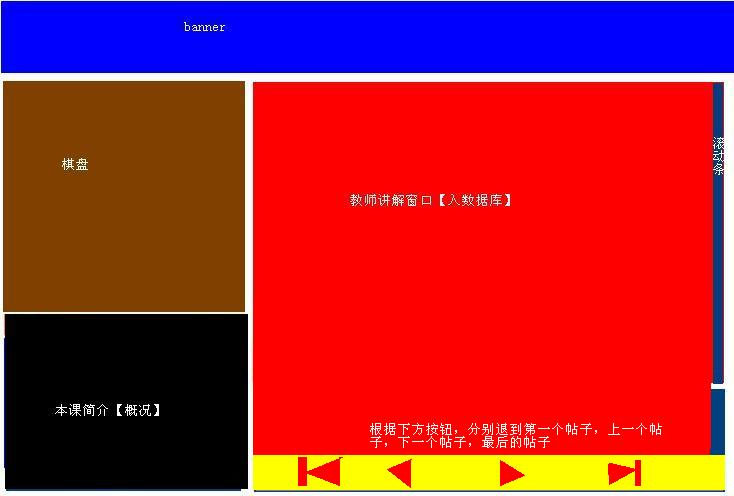

【注：以下内容是最初设计稿，目前内测的版本已经实现下列设计中的60%，且有部分功能超越了原有设计】
2007-12-26
五子棋在线教室正在制作中，此次制作将涉及到较多技术问题，因此周期较长，力争2007年底之前完工，这些开发都是利用业余时间在做，无经费支持的。
发几张策划时设计的效果图吧。
首先，本教室分为上课时和课后两个阶段，上课时，有教师1-2人和学生若干人，课堂之上学生只能在聊天窗口中发言，且不被记录进数据库，教师发布内容被记录到数据库中；课后，所有人员均只能看到上课记录[可以通过按钮逐条显示上课步骤]，而不能再进行交流了，对应本课的教师可以进入编辑相关内容。
其次，教师在讲课时，一方面是自由打谱，然后点击确定，将棋谱现状保存到数据库中，也就是说每次保存一张完整的棋谱信息；另一方面下方有个编辑器，可以编辑内容[含上传]，然后发布保存到数据库中，此同回复帖子。
首先是上课时教师端的界面：

接着是上课时学生端的界面：

最后是下课后访问者阅读界面：

无限期待 有志大哥FIGHTING
请问教室端在哪可以下载到！
引用：
原文由 爱在春夏秋冬 发表于 2008-4-23 18:49:21 :请问教室端在哪可以下载到！
不需要下载任何客户端，直接访问本站的五子棋在线教学
谢谢！
看到了！